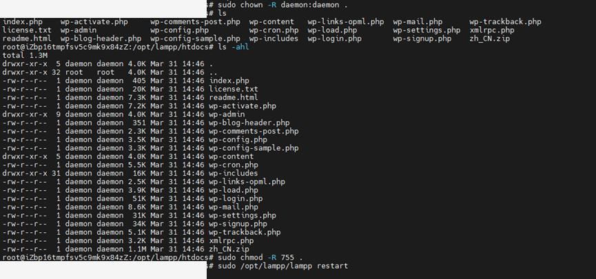
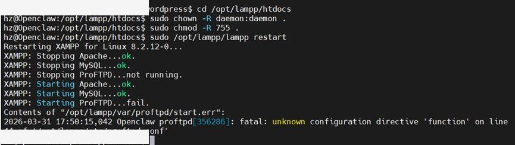
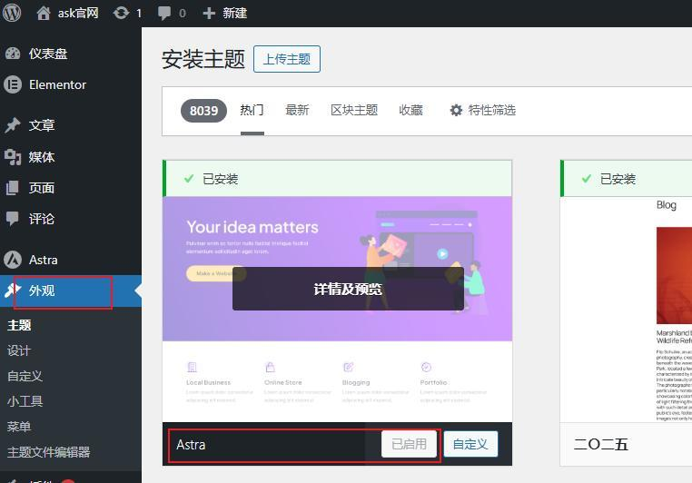
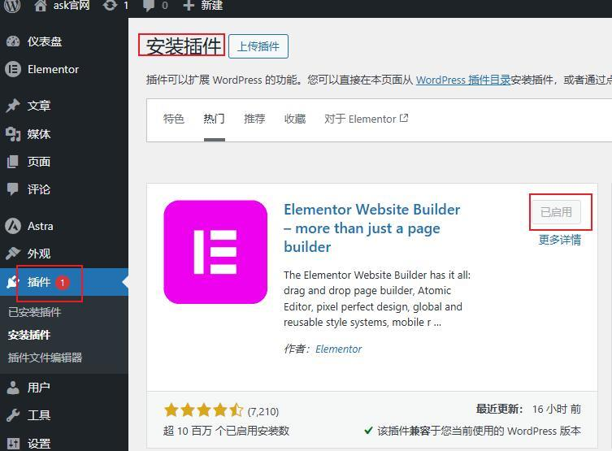
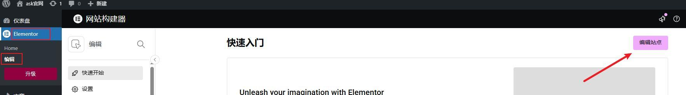
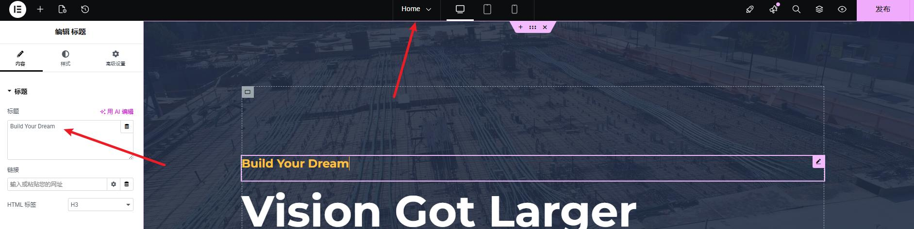

运行维护
权限优化与服务排障
目标
把 WordPress 目录权限调整到适合 Apache 运行的状态，并处理服务异常、主题插件安装等后续维护环节，让官网从“能打开”进一步进入“能维护”。
1. 调整站点目录权限
XAMPP 中的 Apache 进程默认以 daemon 身份运行，因此需要把站点目录所有者和权限设置为更合适的状态，避免后续插件安装、媒体上传和配置修改失败。
cd /opt/lampp/htdocs
sudo chown -R daemon:daemon .
sudo chmod -R 755 .
sudo /opt/lampp/lampp restart
2. 处理 ProFTPD 启动异常
在服务重启过程中，手册里记录了一次 ProFTPD 配置异常。这里的关键不是“是否使用 FTP”，而是遇到服务报错后，能够从日志和配置文件快速定位问题。
cat /opt/lampp/var/proftpd/start.err
vim /opt/lampp/etc/proftpd.conf
sudo /opt/lampp/lampp start proftpd
3. 补充后台主题与页面编辑能力
为了给后续官网页面设计和内容维护留出空间，又在 WordPress 后台中安装了 Astra 主题和 Elementor 插件。这一步让站点不只是“部署完成”，而是开始具备真正的页面建设能力。




4. 阶段小结
很多官网项目做到“能打开后台”就结束了，但真正落地时还要继续处理权限、日志、重启、插件和页面维护能力。把这一块做扎实，后续交接和持续维护都会顺很多。
本阶段成果
完成站点目录权限优化、服务异常排查和 Astra / Elementor 安装验证，让官网从基础程序状态进入可维护、可继续建设的运行状态。